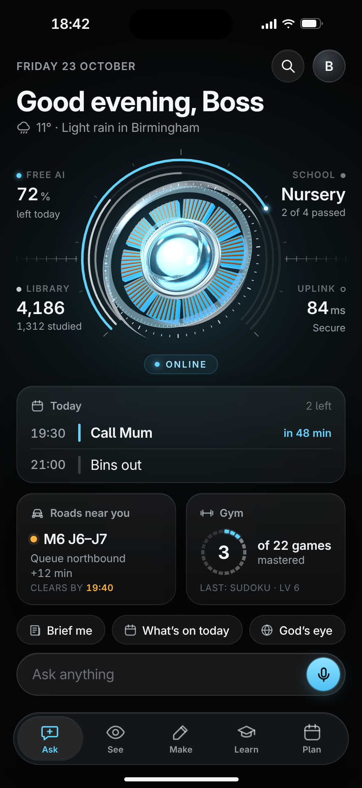
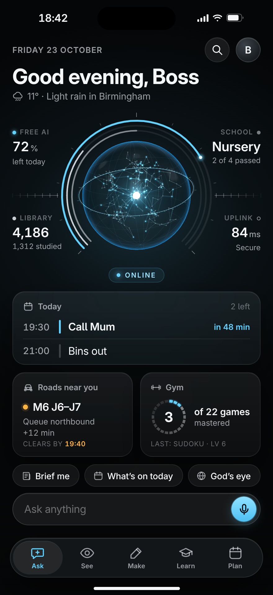
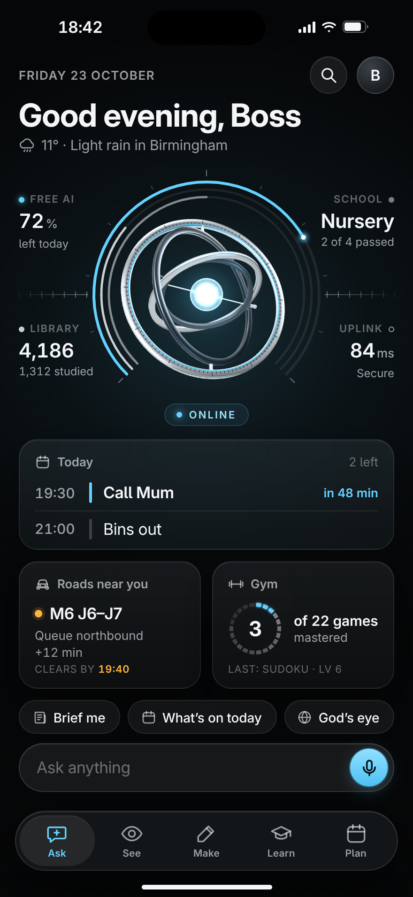

Rendered live with three.js; the four gauges stay round each one

The arc reactor, rebuilt in true 3D: brushed housing, copper windings, a plasma heart under real glass.

A hologram of Ghosty’s mind: his library as a living constellation that lights up as he studies.

A machined instrument: nested rings turning on three axes round a small bright core.